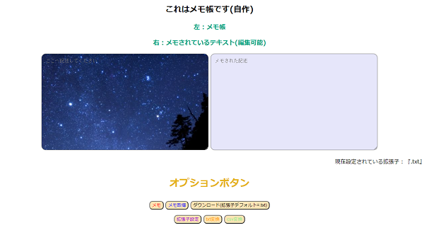
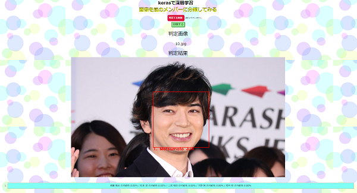
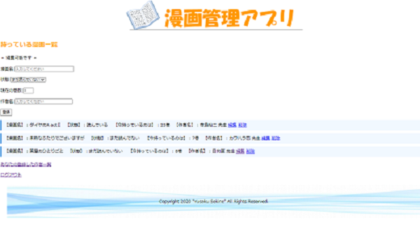

ポートフォリオ一覧
ここでは私が過去に制作したものを紹介させていただきます。非常に簡素でまだまだ未熟ですが、自分の勉強の記録です。
今後より良いサービスを作るための大事な成長記録としてこのページを活用していきたいです。
アドバイスや改善点がありましたらTwitterアカウントまでご連絡いただければ幸いです。
ホーム画面へ
1.自作メモ帳

作品説明
開発言語 : HTML,CSS,JavaScript
初めて自分でデプロイしたものです。node.js(express)を使っていますが、node.jsさは一切ありません。
JavaScriptの便利さとnode.jsに興味を持ったきっかけになった開発経験でした。
ソースコード
リンク
2.嵐の顔認識アプリ

作品説明
開発言語 : Python(Django,TensorFlow)
大学で勉強した人工知能プログラムをPythonでアプリケーション化したものです。Djangoのデプロイが困難でなかなかデプロイができませんが、しっかり起動します。
正答率はまずまずで評価方法も適切でないですが、学校の授業を授業だけで終わらせず、次につなげること経験ができました。
この制作をきっかけにPythonでの開発に力を入れるようになりました。
現在はFlask,Djangoを勉強し、APIの取り入れたアプリ開発を進めています。
ソースコード(アプリ部分)
ソースコード(画像認識部分)
3.漫画管理アプリ(個人使用)

作品説明
開発言語 : Go(gin,gorm)
Go言語に興味を持ち、自分の困っていることを解決するために作成したアプリです。
漫画を管理し、同じ巻数の漫画を買うことを防ぐ機能、作者ごとの漫画表示や編集が可能です。
2020年10月23日時点ではセッション管理機能とデータベース変更を検討しているところです。
具体的には
1.セッション管理の追加により他者へのサービス提供を可能にする。
2.sqite3 → MySQLへの変更により使い勝手さの向上を目指す。
Go言語の面白さをアプリ開発を通じて知ることができました。今はまだマイナーだと思われているGo言語を自分のモノにして市場価値の向上を目指します。
ソースコード